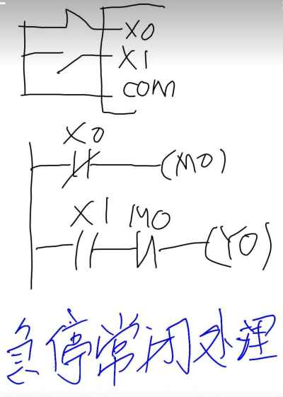

为什么急停要写常开？ 那么为什么急停要和普通停止按钮相反呢？ 其实写成常开的不仅仅是急停，还有热继、 温控等等带有保护功能的接点。 防止按钮失效 如果程序中写成了常闭，那么这个时候急停 按钮失效，无法给PLC发送停止信号，出现 紧急情况无法停机，非常危险，所以在急停写常开，外部接线还是常闭触点的 时候，断开的时候是双项断开，程序中断 开，实际的物理接点也是断开的，这也就是 失效安全保护。  先用常闭触点i0.0接一个m0.0线圈输出，再用m0.0的常闭代替。